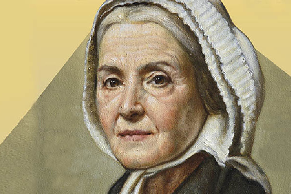
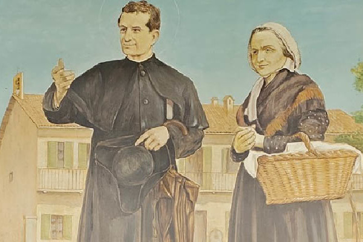

Margit Mama Élete
Occhiena Margit, akit a Szalézi Család egyszerűen csak Margit mamaként emleget, 1788. április 1-jén született Torinó közelében, és 1856. november 25-én hunyt el Capriglióban. Három gyermek édesanyja volt: Antal, József és a legfiatalabb, János, akit a világ Bosco Szent Jánosként ismert meg. Férjét korán elvesztette, így egyedül, nehéz körülmények között kellett felnevelnie fiait. Élete egyszerűnek tűnt, de rendkívüli volt: hitéből és kitartásából olyan erő fakadt, amely családját összetartotta, és fiát egész életére inspirálta.
Margit Mamáról
Nemcsak édesanya volt, hanem nevelő, tanító, és a mindennapokban példát mutató keresztény asszony. Amikor János papként elindította az oratóriumi munkát, Margit mellette állt, segített a fiatalok befogadásában és gondozásában. Életével közvetítette azt a légkört, amelyből később a Szalézi Család szellemisége sarjadt. Ezért nevezhetjük őt a Szaléziak anyjának, hiszen életszentsége nem a rendkívüli tettekben, hanem az apró, mindennapi helytállásban mutatkozott meg.
